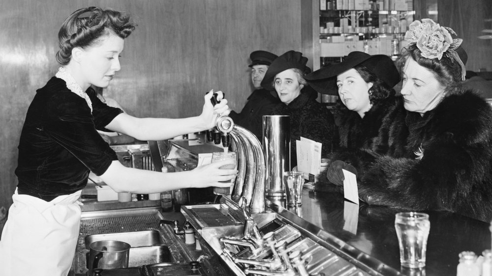

Introduction
Picture Gallery
A soft drink is a drink that usually contains water
(often carbonated), a sweetener, and a natural and/or
artificial flavoring. The sweetener may be a sugar, high-fructose corn
syrup, fruit juice, a sugar substitute (in the case of diet drinks),
or some combination of these.
Soft drinks may also contain caffeine, colorings, preservatives,
and/or other ingredients.
History (Origin)
The origins of soft drinks lie in the development of fruit-flavored drinks. In the medieval Middle East, a variety of fruit-flavored soft drinks were widely drunk, such as sharbat, and were often sweetened with ingredients such as sugar, syrup and honey. Other common ingredients included lemon, apple, pomegranate, tamarind, jujube, sumac, musk, mint and ice . Middle Eastern drinks later became popular in medieval Europe, where the word "syrup" was derived from Arabic.In Tudor England, 'water imperial' was widely drunk; it was a sweetened drink with lemon flavor and containing cream of tartar. 'Manays Cryste' was a sweetened cordial flavored with rosewater, violets or cinnamon.
Soft Drinks Types
Ever since the moment that Joseph Priestley managed to create the process of carbonation, inventors from all around the world embraced soft drinks with both hands open. This quickly enabled these drinks to become popular all around the world, not only utilizing vast technical improvements that enabled them to become easily accessible, but also large variety of recipes that made soft drinks appropriate for any situation.
Following are the Types of Softdrinks